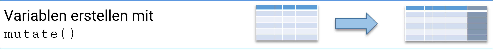
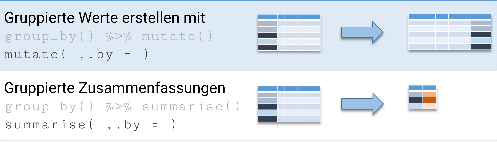

library(tidyverse)6 Data Wrangling II
Wir gehen nochmal zurück zum Uni-Datensatz vom Anfang:
dat1 <- data.frame(studs = c(19173,5333,15643),
profs = c(322,67,210),
gegr = c(1971,1830,1973),
prom_recht = rep(TRUE,3),
uni = c("Uni Bremen","Uni Vechta", "Uni Oldenburg"))
dat2 <- data.frame(studs = c(14954,47269 ,23659,9415 ,38079),
profs = c(250,553,438 ,150,636),
prom_recht = c(FALSE,TRUE,TRUE,TRUE,FALSE),
gegr = c(1971,1870,1457,1818,1995),
uni = c("FH Aachen","RWTH Aachen","Uni Freiburg","Uni Bonn","FH Bonn-Rhein-Sieg"))
dat1 studs profs gegr prom_recht uni
1 19173 322 1971 TRUE Uni Bremen
2 5333 67 1830 TRUE Uni Vechta
3 15643 210 1973 TRUE Uni Oldenburgdat2 studs profs prom_recht gegr uni
1 14954 250 FALSE 1971 FH Aachen
2 47269 553 TRUE 1870 RWTH Aachen
3 23659 438 TRUE 1457 Uni Freiburg
4 9415 150 TRUE 1818 Uni Bonn
5 38079 636 FALSE 1995 FH Bonn-Rhein-SiegMit bind_rows() aus {dplyr} können wir die beiden data.frames zusammensetzen:
dat3 <- bind_rows(dat1,dat2)
dat3 studs profs gegr prom_recht uni
1 19173 322 1971 TRUE Uni Bremen
2 5333 67 1830 TRUE Uni Vechta
3 15643 210 1973 TRUE Uni Oldenburg
4 14954 250 1971 FALSE FH Aachen
5 47269 553 1870 TRUE RWTH Aachen
6 23659 438 1457 TRUE Uni Freiburg
7 9415 150 1818 TRUE Uni Bonn
8 38079 636 1995 FALSE FH Bonn-Rhein-SiegEs gibt auch bind_cols() um Datensätze spaltenweise zusammenzufügen. Möglichkeiten, Datensätzen auf Basis einer oder mehrer Identifikationsvariablen zu “mergen” lernen wir auch noch später kennen.
6.1 Variablen erstellen
Nun sehen wir uns die Möglichkeiten, Variablen zu erstellen, nochmal etwas genauer an. Grundsätzlich gibt es zwei Arten, Variablen in einen data.frame hinzuzufügen:
6.1.1 base R: ...$newvar <-
dat3$studs_to_mean <- dat3$studs - mean(dat3$studs)
dat3 studs profs gegr prom_recht uni studs_to_mean
1 19173 322 1971 TRUE Uni Bremen -2517.625
2 5333 67 1830 TRUE Uni Vechta -16357.625
3 15643 210 1973 TRUE Uni Oldenburg -6047.625
4 14954 250 1971 FALSE FH Aachen -6736.625
5 47269 553 1870 TRUE RWTH Aachen 25578.375
6 23659 438 1457 TRUE Uni Freiburg 1968.375
7 9415 150 1818 TRUE Uni Bonn -12275.625
8 38079 636 1995 FALSE FH Bonn-Rhein-Sieg 16388.375Mit <- NULL können Variablen auch gelöscht werden:
dat3$studs_to_mean <- NULL
dat3 studs profs gegr prom_recht uni
1 19173 322 1971 TRUE Uni Bremen
2 5333 67 1830 TRUE Uni Vechta
3 15643 210 1973 TRUE Uni Oldenburg
4 14954 250 1971 FALSE FH Aachen
5 47269 553 1870 TRUE RWTH Aachen
6 23659 438 1457 TRUE Uni Freiburg
7 9415 150 1818 TRUE Uni Bonn
8 38079 636 1995 FALSE FH Bonn-Rhein-Sieg6.1.2 {dplyr}: mutate(neue_var= )
Eine alternative Möglichkeit, Variablen zu erstellen ist mutate(neu_variable = ) aus {dplyr} ({tidyverse}):

Die grundsätzliche Struktur ist immer datensatz %>% mutate(neue_var = ....):
dat3 %>% mutate(studs_to_mean = studs-mean(studs)) studs profs gegr prom_recht uni studs_to_mean
1 19173 322 1971 TRUE Uni Bremen -2517.625
2 5333 67 1830 TRUE Uni Vechta -16357.625
3 15643 210 1973 TRUE Uni Oldenburg -6047.625
4 14954 250 1971 FALSE FH Aachen -6736.625
5 47269 553 1870 TRUE RWTH Aachen 25578.375
6 23659 438 1457 TRUE Uni Freiburg 1968.375
7 9415 150 1818 TRUE Uni Bonn -12275.625
8 38079 636 1995 FALSE FH Bonn-Rhein-Sieg 16388.375Wir können auch mehrere Variablen innerhalb eines mutate()-Befehls erstellen:
dat3 %>% mutate(studs_to_mean = studs-mean(studs),
profs_to_mean = profs-mean(profs)) studs profs gegr prom_recht uni studs_to_mean profs_to_mean
1 19173 322 1971 TRUE Uni Bremen -2517.625 -6.25
2 5333 67 1830 TRUE Uni Vechta -16357.625 -261.25
3 15643 210 1973 TRUE Uni Oldenburg -6047.625 -118.25
4 14954 250 1971 FALSE FH Aachen -6736.625 -78.25
5 47269 553 1870 TRUE RWTH Aachen 25578.375 224.75
6 23659 438 1457 TRUE Uni Freiburg 1968.375 109.75
7 9415 150 1818 TRUE Uni Bonn -12275.625 -178.25
8 38079 636 1995 FALSE FH Bonn-Rhein-Sieg 16388.375 307.75Oder Variablen können innerhalb von mutate() weiterverwendet werden:
dat3 %>% mutate(rel_to_mean = studs-mean(studs),
above_mean = rel_to_mean > 0) studs profs gegr prom_recht uni rel_to_mean above_mean
1 19173 322 1971 TRUE Uni Bremen -2517.625 FALSE
2 5333 67 1830 TRUE Uni Vechta -16357.625 FALSE
3 15643 210 1973 TRUE Uni Oldenburg -6047.625 FALSE
4 14954 250 1971 FALSE FH Aachen -6736.625 FALSE
5 47269 553 1870 TRUE RWTH Aachen 25578.375 TRUE
6 23659 438 1457 TRUE Uni Freiburg 1968.375 TRUE
7 9415 150 1818 TRUE Uni Bonn -12275.625 FALSE
8 38079 636 1995 FALSE FH Bonn-Rhein-Sieg 16388.375 TRUEDer Ausgangsdatensatz bleibt aber unverändert:
dat3 studs profs gegr prom_recht uni
1 19173 322 1971 TRUE Uni Bremen
2 5333 67 1830 TRUE Uni Vechta
3 15643 210 1973 TRUE Uni Oldenburg
4 14954 250 1971 FALSE FH Aachen
5 47269 553 1870 TRUE RWTH Aachen
6 23659 438 1457 TRUE Uni Freiburg
7 9415 150 1818 TRUE Uni Bonn
8 38079 636 1995 FALSE FH Bonn-Rhein-SiegWenn wir die Ergebnisse behalten wollen, müssen wir das Ergebnis in einem Objekt ablegen:
dat4 <-
dat3 %>%
mutate(rel_to_mean = studs-mean(studs),
above_mean = rel_to_mean > 0)
dat4 studs profs gegr prom_recht uni rel_to_mean above_mean
1 19173 322 1971 TRUE Uni Bremen -2517.625 FALSE
2 5333 67 1830 TRUE Uni Vechta -16357.625 FALSE
3 15643 210 1973 TRUE Uni Oldenburg -6047.625 FALSE
4 14954 250 1971 FALSE FH Aachen -6736.625 FALSE
5 47269 553 1870 TRUE RWTH Aachen 25578.375 TRUE
6 23659 438 1457 TRUE Uni Freiburg 1968.375 TRUE
7 9415 150 1818 TRUE Uni Bonn -12275.625 FALSE
8 38079 636 1995 FALSE FH Bonn-Rhein-Sieg 16388.375 TRUE
Dummy-Variablen erstellen mit
as.numeric()
Wenn wir logische Variablen mit as.numeric() in numerische Variablen umformatieren erhalten wir eine Dummy-Codierung:
dat3 %>%
mutate(prom_dummy = as.numeric(prom_recht ),
over10k = as.numeric(studs > 10000) # Abgleich direkt in numeric
) studs profs gegr prom_recht uni prom_dummy over10k
1 19173 322 1971 TRUE Uni Bremen 1 1
2 5333 67 1830 TRUE Uni Vechta 1 0
3 15643 210 1973 TRUE Uni Oldenburg 1 1
4 14954 250 1971 FALSE FH Aachen 0 1
5 47269 553 1870 TRUE RWTH Aachen 1 1
6 23659 438 1457 TRUE Uni Freiburg 1 1
7 9415 150 1818 TRUE Uni Bonn 1 0
8 38079 636 1995 FALSE FH Bonn-Rhein-Sieg 0 16.1.3 Übung
6.2 Gruppierung mit group_by() oder .by=
Die wirkliche Stärke von mutate() kommt aber erst zum Tragen, wenn wir es mit weiteren {dplyr}-Funktionen kombinieren. Eine häufige Aufgabe in der Datenaufbereitung sind gruppierte Werte.

Wir machen unseren Beispieldatensatz noch etwas kleiner:
dat5 <- dat3 %>%
select(-uni,-gegr) # nur dass alles zu sehen istWenn wir einen Datensatz mit group_by() entlang den Werten einer Variablen gruppieren, dann werden alle weiteren mutate() Berechnungen nur innerhalb dieser Gruppen ausgeführt:
dat5 %>%
mutate(m_studs = mean(studs),
m_profs = mean(profs)) %>%
group_by(prom_recht) %>%
mutate(m_studs2 = mean(studs),
m_profs2 = mean(profs))# A tibble: 8 × 7
# Groups: prom_recht [2]
studs profs prom_recht m_studs m_profs m_studs2 m_profs2
<dbl> <dbl> <lgl> <dbl> <dbl> <dbl> <dbl>
1 19173 322 TRUE 21691. 328. 20082 290
2 5333 67 TRUE 21691. 328. 20082 290
3 15643 210 TRUE 21691. 328. 20082 290
4 14954 250 FALSE 21691. 328. 26516. 443
5 47269 553 TRUE 21691. 328. 20082 290
6 23659 438 TRUE 21691. 328. 20082 290
7 9415 150 TRUE 21691. 328. 20082 290
8 38079 636 FALSE 21691. 328. 26516. 443Verwenden wir group_by(), können (sollten!) wir mit ungroup() die Gruppierung wieder aufheben, sobald wir sie nicht mehr benötigen:
dat5 %>%
mutate(m_studs = mean(studs),
m_profs = mean(profs)) %>%
group_by(prom_recht) %>%
mutate(m_studs2 = mean(studs)) %>%
ungroup() %>%
mutate(m_profs2 = mean(profs)) studs profs prom_recht m_studs m_profs m_studs2 m_profs2
1 19173 322 TRUE 21690.62 328.25 20082.0 328.25
2 5333 67 TRUE 21690.62 328.25 20082.0 328.25
3 15643 210 TRUE 21690.62 328.25 20082.0 328.25
4 14954 250 FALSE 21690.62 328.25 26516.5 328.25
5 47269 553 TRUE 21690.62 328.25 20082.0 328.25
6 23659 438 TRUE 21690.62 328.25 20082.0 328.25
7 9415 150 TRUE 21690.62 328.25 20082.0 328.25
8 38079 636 FALSE 21690.62 328.25 26516.5 328.25Seit {dplyr}-Version 1.1.1 können wir direkt in mutate() mit dem Argument .by= eine Gruppierung angeben. Diese Gruppierung .by= gilt dabei nur für die unmittelbaren Berechnungen innerhalb mutate() - wir sparen uns das ungroup().
dat5 %>%
mutate(m_studs = mean(studs),
m_profs = mean(profs)) %>%
mutate(m_studs2 = mean(studs),
.by = prom_recht) %>%
mutate(m_profs2 = mean(profs)) studs profs prom_recht m_studs m_profs m_studs2 m_profs2
1 19173 322 TRUE 21690.62 328.25 20082.0 328.25
2 5333 67 TRUE 21690.62 328.25 20082.0 328.25
3 15643 210 TRUE 21690.62 328.25 20082.0 328.25
4 14954 250 FALSE 21690.62 328.25 26516.5 328.25
5 47269 553 TRUE 21690.62 328.25 20082.0 328.25
6 23659 438 TRUE 21690.62 328.25 20082.0 328.25
7 9415 150 TRUE 21690.62 328.25 20082.0 328.25
8 38079 636 FALSE 21690.62 328.25 26516.5 328.25Mit summarise() statt mutate() erhalten wir eine Übersicht:
dat5 %>%
summarise(m_studs = mean(studs),.by = prom_recht) prom_recht m_studs
1 TRUE 20082.0
2 FALSE 26516.56.2.1 Übung
6.3 across(): Mehrere Variablen bearbeiten
Eine sehr vielseitige Erweiterung für mutate() und summarise() ist across(). Hier mit können wir eine Funktion auf mehrere Spalten gleichzeitig anwenden, ohne uns zu wiederholen:
dat3 %>%
summarise(studs = mean(studs),
profs = mean(profs)) studs profs
1 21690.62 328.25Hier ist across() deutlich kürzer - für die Variablenauswahl können wir die ?select_helpers verwenden - z.B. matches():
dat3 %>%
summarise(across(.cols = matches("studs|profs"),.fns = ~mean(.x))) studs profs
1 21690.62 328.25Natürlich ist das auch kombinierbar mit group_by():
dat3 %>%
group_by(prom_recht) %>%
summarise(across(matches("studs|profs"), ~mean(.x)))# A tibble: 2 × 3
prom_recht studs profs
<lgl> <dbl> <dbl>
1 FALSE 26516. 443
2 TRUE 20082 290Wir können auch mehrere Funktionen durchführen, dafür müssen wir sie in einer list() angeben:
dat3 %>%
group_by(prom_recht) %>%
summarise(across(matches("studs|profs"), list(mean = ~mean(.x), sd = ~sd(.x))))# A tibble: 2 × 5
prom_recht studs_mean studs_sd profs_mean profs_sd
<lgl> <dbl> <dbl> <dbl> <dbl>
1 FALSE 26516. 16352. 443 273.
2 TRUE 20082 14858. 290 183.Diese list()auch vorab ablegen und dann verwenden:
wert_liste <- list(mean = ~mean(.x), sd = ~sd(.x), max = ~max(.x,na.rm = T))
dat3 %>%
group_by(prom_recht) %>%
summarise(across(matches("studs|profs"), wert_liste))# A tibble: 2 × 7
prom_recht studs_mean studs_sd studs_max profs_mean profs_sd profs_max
<lgl> <dbl> <dbl> <dbl> <dbl> <dbl> <dbl>
1 FALSE 26516. 16352. 38079 443 273. 636
2 TRUE 20082 14858. 47269 290 183. 553Mit dem .names()-Argument können wir auch die Benennung der Spalten steuern. {.fn} steht dabei als Platzhalter für die angewendete Funktion, {.col} für den Namen der bearbeiteten Variable.
dat3 %>%
group_by(prom_recht) %>%
summarise(across(matches("studs|profs"),
list(mean = ~mean(.x), sd = ~sd(.x)),
.names = "{.fn}_{.col}"))# A tibble: 2 × 5
prom_recht mean_studs sd_studs mean_profs sd_profs
<lgl> <dbl> <dbl> <dbl> <dbl>
1 FALSE 26516. 16352. 443 273.
2 TRUE 20082 14858. 290 183.Alle gezeigten Funktionen funktionieren natürlich auch mit mutate():
dat3 %>%
mutate(across(matches("studs|profs"), ~mean(.x), .names = "m_{.col}")) studs profs gegr prom_recht uni m_studs m_profs
1 19173 322 1971 TRUE Uni Bremen 21690.62 328.25
2 5333 67 1830 TRUE Uni Vechta 21690.62 328.25
3 15643 210 1973 TRUE Uni Oldenburg 21690.62 328.25
4 14954 250 1971 FALSE FH Aachen 21690.62 328.25
5 47269 553 1870 TRUE RWTH Aachen 21690.62 328.25
6 23659 438 1457 TRUE Uni Freiburg 21690.62 328.25
7 9415 150 1818 TRUE Uni Bonn 21690.62 328.25
8 38079 636 1995 FALSE FH Bonn-Rhein-Sieg 21690.62 328.25Mehr Beispiele in der Hilfe zu across
6.3.1 Übung
6.4 Eigene Funktionen
Woher kommt aber die ~1 in across()? Dazu sehen wir uns einmal die Grundlagen von Funktionen in R an.
Dazu sehen wir uns drei Zufriedensheitsvariablen für die Befragten aus den Zeilen 12-16 an:
| var | Wichtig bei Beruf |
|---|---|
|
Viel Geld verdienen |
|
Ein Beruf, der Spass macht |
|
Gute Aufstiegsmoeglichkeiten |
|
Ein sicherer Arbeitsplatz |
|
Ein Beruf, bei dem man seine Faehigkeiten zeigen kann |
| -10 bis -1 | 1 | 2 | 3 | 4 |
|---|---|---|---|---|
| t.n.z./k.A. | Sehr wichtig | Eher wichtig | Eher nicht wichtig | Ueberhaupt nicht wichtig |
pend <- haven::read_dta("./orig/PENDDAT_cf_W13.dta")
sat_small <-
pend %>%
filter(welle == 1) %>%
select(matches("PEO0300(a|b|c)")) %>%
slice(12:16) %>%
haven::zap_labels() %>% haven::zap_label() # labels entfernen
sat_small# A tibble: 5 × 3
PEO0300a PEO0300b PEO0300c
<dbl> <dbl> <dbl>
1 2 3 2
2 1 1 3
3 1 1 3
4 2 1 1
5 1 1 2Häufig wollen wir mehrere Variablen mit der gleichen Operation bearbeiten. Oben haben wir gesehen wie sich das mit across() für existierende Funktionen erledigen lässt. Was aber, wenn wir eine Berechnung durchführen wollen, die nicht einfach die Anwendung von mean(), sd() o.ä. ist?
sat_small %>%
mutate(dmean_PEO0300a = PEO0300a - mean(PEO0300a,na.rm = T),
dmean_PEO0300c = PEO0300c - mean(PEO0300c,na.rm = T))# A tibble: 5 × 5
PEO0300a PEO0300b PEO0300c dmean_PEO0300a dmean_PEO0300c
<dbl> <dbl> <dbl> <dbl> <dbl>
1 2 3 2 0.6 -0.200
2 1 1 3 -0.4 0.8
3 1 1 3 -0.4 0.8
4 2 1 1 0.6 -1.2
5 1 1 2 -0.4 -0.200…und jetzt noch F1450_06? Dann hätten wir drei Mal das mehr oder weniger gleiche getippt und damit gegen das “DRY”-Prinzip2 verstoßen. Außerdem gibt es im PASS CampusFile insgesamt 5 Spalten mit ähnlichen Zufriedenheitsvariablen. Wenn wir die alle bearbeiten möchten, ist copy & paste keine echte Option.
Eigene Funktionen helfen uns, das DRY-Prinzip in R umzusetzen. Wir machen die Berechnungsschritte Teil einer function() und wenden diese dann auf die gewünschten Variablen an. Eine Funktion hat einen Input, für welchen ein Platzhalter in der () definiert wird. Dieser Platzhalter kann dann innerhalb der Funktion - zwischen den {} - aufgerufen und bearbeitet werden. Als Ergebnis erhalten wir das Objekt, das wir in return() angeben. return() muss immer als letztes angeben werden und wir können immer nur ein Objekt als Output definieren:
dtomean <- function(x){
d_x <- x - mean(x,na.rm = T)
return(d_x)
}var1 <- c(1,6,3,7,8,1,5)
mean(var1)[1] 4.428571dtomean(var1)[1] -3.4285714 1.5714286 -1.4285714 2.5714286 3.5714286 -3.4285714 0.5714286Wie können wir unsere Funktion dtomean() jetzt auf die Variablen aus unserem sat_small anwenden? Grundsätzlich haben wir ganz zu Beginn gesehen, dass ein data.frame lediglich zusammengefügte Sammlung von Vektoren (den Variablen) ist. Dementsprechend können wir jetzt unsere dtomean() auf eine Variable (einen Vektor) anwenden, indem wir ihn mit data.frame$variablename aufrufen:
dtomean(sat_small$PEO0300a)[1] 0.6 -0.4 -0.4 0.6 -0.4Um unsere Funktion jetzt auf jede Variable eines data.frame anzuwenden, können wir lapply() verwenden - der Output ist dann eine Liste, deren Elemente nach den Variablennamen benannt werden:
lapply(sat_small,FUN = dtomean)$PEO0300a
[1] 0.6 -0.4 -0.4 0.6 -0.4
$PEO0300b
[1] 1.6 -0.4 -0.4 -0.4 -0.4
$PEO0300c
[1] -0.2 0.8 0.8 -1.2 -0.2res <- lapply(sat_small,FUN = dtomean)
class(res)[1] "list"map() aus {purrr} ist eine Alternative zu lapply:
lapply(sat_small,FUN = dtomean)$PEO0300a
[1] 0.6 -0.4 -0.4 0.6 -0.4
$PEO0300b
[1] 1.6 -0.4 -0.4 -0.4 -0.4
$PEO0300c
[1] -0.2 0.8 0.8 -1.2 -0.2sat_small %>% map(~dtomean(.x))$PEO0300a
[1] 0.6 -0.4 -0.4 0.6 -0.4
$PEO0300b
[1] 1.6 -0.4 -0.4 -0.4 -0.4
$PEO0300c
[1] -0.2 0.8 0.8 -1.2 -0.2Diese formula syntax Schreibweise findet sich dann auch in across() wieder - zusätzlich haben wir hier direkt über .names = die Möglichkeit, die Variablennamen für die Ergebnisse zu bearbeiten:
sat_small %>%
mutate(across(matches("PEO0300"),~dtomean(.x),.names = "dmean_{.col}"))# A tibble: 5 × 6
PEO0300a PEO0300b PEO0300c dmean_PEO0300a dmean_PEO0300b dmean_PEO0300c
<dbl> <dbl> <dbl> <dbl> <dbl> <dbl>
1 2 3 2 0.6 1.6 -0.200
2 1 1 3 -0.4 -0.4 0.8
3 1 1 3 -0.4 -0.4 0.8
4 2 1 1 0.6 -0.4 -1.2
5 1 1 2 -0.4 -0.4 -0.2006.4.1 Übung
6.5 Hilfsfunktionen ifelse() und case_when()
ifelse() ist eine große Hilfe für alle Umcodierungen: wir formulieren darin eine Bedingung und wenn diese zutrifft wird der erste Wert eingesetzt, wenn nicht wird der zweite Wert eingesetzt. Hier fragen wir also ab, ob studs-mean(studs) größer 0 ist - dann wird darüber eingesetzt, ansonsten eine darunter:
dat3 %>% mutate(rel_to_mean = studs-mean(studs),
ab_mean_lab = ifelse(rel_to_mean > 0,"darüber","darunter")) studs profs gegr prom_recht uni rel_to_mean ab_mean_lab
1 19173 322 1971 TRUE Uni Bremen -2517.625 darunter
2 5333 67 1830 TRUE Uni Vechta -16357.625 darunter
3 15643 210 1973 TRUE Uni Oldenburg -6047.625 darunter
4 14954 250 1971 FALSE FH Aachen -6736.625 darunter
5 47269 553 1870 TRUE RWTH Aachen 25578.375 darüber
6 23659 438 1457 TRUE Uni Freiburg 1968.375 darüber
7 9415 150 1818 TRUE Uni Bonn -12275.625 darunter
8 38079 636 1995 FALSE FH Bonn-Rhein-Sieg 16388.375 darübercase_when() ({dplyr}) erweitert dieses Prinzip, sodass wir mehr als zwei Optionen angeben können. Die Syntax ist aber etwas anders: hier geben wir erst die Bedingung an, dann nach einer ~3 die einzusetzenden Werte:
dat3 %>% mutate(alter = case_when(gegr < 1500 ~ "sehr alt",
gegr < 1900 ~ "alt")) studs profs gegr prom_recht uni alter
1 19173 322 1971 TRUE Uni Bremen <NA>
2 5333 67 1830 TRUE Uni Vechta alt
3 15643 210 1973 TRUE Uni Oldenburg <NA>
4 14954 250 1971 FALSE FH Aachen <NA>
5 47269 553 1870 TRUE RWTH Aachen alt
6 23659 438 1457 TRUE Uni Freiburg sehr alt
7 9415 150 1818 TRUE Uni Bonn alt
8 38079 636 1995 FALSE FH Bonn-Rhein-Sieg <NA>Mit TRUE können alle Fälle angesprochen werden, die bis dahin keiner Bedingung entsprochen haben:
dat3 %>% mutate(alter = case_when(gegr < 1500 ~ "sehr alt",
gegr < 1900 ~ "alt",
TRUE ~ "relativ neu")) studs profs gegr prom_recht uni alter
1 19173 322 1971 TRUE Uni Bremen relativ neu
2 5333 67 1830 TRUE Uni Vechta alt
3 15643 210 1973 TRUE Uni Oldenburg relativ neu
4 14954 250 1971 FALSE FH Aachen relativ neu
5 47269 553 1870 TRUE RWTH Aachen alt
6 23659 438 1457 TRUE Uni Freiburg sehr alt
7 9415 150 1818 TRUE Uni Bonn alt
8 38079 636 1995 FALSE FH Bonn-Rhein-Sieg relativ neuDas muss sich nicht auf eine Variable beschränken:
dat3 %>% mutate(alter = case_when(gegr < 1500 & prom_recht == T ~ "sehr alte Uni",
gegr < 1900 & prom_recht == T ~ "alte Uni",
gegr > 1900 & prom_recht == T ~ "junge Uni",
gegr < 1900 & prom_recht == F ~ "alte Hochschule",
gegr > 1900 & prom_recht == F ~ "junge Hochschule")) studs profs gegr prom_recht uni alter
1 19173 322 1971 TRUE Uni Bremen junge Uni
2 5333 67 1830 TRUE Uni Vechta alte Uni
3 15643 210 1973 TRUE Uni Oldenburg junge Uni
4 14954 250 1971 FALSE FH Aachen junge Hochschule
5 47269 553 1870 TRUE RWTH Aachen alte Uni
6 23659 438 1457 TRUE Uni Freiburg sehr alte Uni
7 9415 150 1818 TRUE Uni Bonn alte Uni
8 38079 636 1995 FALSE FH Bonn-Rhein-Sieg junge Hochschule6.5.1 Übung
6.6 Variablen umbenennen
Um Variablen umzubenennen gibt es rename(neuer_name = alter_name)
sat_small %>% rename(neuername =PEO0300a)# A tibble: 5 × 3
neuername PEO0300b PEO0300c
<dbl> <dbl> <dbl>
1 2 3 2
2 1 1 3
3 1 1 3
4 2 1 1
5 1 1 2Für fortgeschrittene Veränderungen empfiehlt sich ein Blick in rename_with(). Damit können wir Regular Expressions, bspw. aus {stringr} verwenden. Hier nur ein Beispiel:
sat_small %>% rename_with(~tolower(.))# A tibble: 5 × 3
peo0300a peo0300b peo0300c
<dbl> <dbl> <dbl>
1 2 3 2
2 1 1 3
3 1 1 3
4 2 1 1
5 1 1 2sat_small %>% rename_with(~str_remove(.x,"PEO0300"))# A tibble: 5 × 3
a b c
<dbl> <dbl> <dbl>
1 2 3 2
2 1 1 3
3 1 1 3
4 2 1 1
5 1 1 2sat_small %>% rename_with(~str_replace(.x,"PEO0300","Beruf_"))# A tibble: 5 × 3
Beruf_a Beruf_b Beruf_c
<dbl> <dbl> <dbl>
1 2 3 2
2 1 1 3
3 1 1 3
4 2 1 1
5 1 1 26.7 Übungen
6.7.1 Übung
- Erstellen Sie
dat3wie oben gezeigt ausdat1unddat2 - Berechnen Sie das Betreuungsverhältnis (Studierende pro Professur
studs/profs) an den Hochschulen relativ zum Mittelwert des Betreuungsverhältnisses (rel_studprofs). - Liegt das Betreuungsverhältnis über oder unter dem Mittelwert? Wie können Sie den Befehl anpassen, sodass die Variable
rel_studprofslediglichTRUEoderFALSEenthält anstelle der Zahlenwerte. - Wandeln Sie
rel_studprofsin eine Dummy-Variable mit 0/1 als Werten stattTRUE/FALSE
Daumenregel zur Entscheidung, ob mutate() oder ...$newvar <- besser passt: Immer wenn es nur darum geht, schnell eine Variable zu erstellen/löschen, ist ...$newvar <- die einfachere Wahl. Sobald es darüber hinaus geht, hat mutate() sehr große Vorteile (folgender Abschnitt).
6.7.2 Übung
- Verwenden Sie weiterhin den Uni-Datensatz.
- Berechnen Sie das Betreuungsverhältnis (
studprofs) relativ zum Mittelwert getrennt für Hochschulen/Unis mit und ohne Promotionsrecht und fügen Sie dieses als neue Spalte ein. - Testen Sie sowohl die Variante mit
group_by()als auch.by =.
6.7.3 Übung
- Verwenden Sie den
pend_small-Datensatz:
pend_small <- haven::read_dta("./orig/PENDDAT_cf_W13.dta",
col_select = c("welle","zpsex","PEO0400a","PEO0400b","PEO0400c","PEO0400d")
) %>%
filter(welle == 2) %>%
slice(1:15)- Berechnen Sie den Mittelwert für die Variablen
PEO0400a,PEO0400b,PEO0400cundPEO0400d:
| var | lab |
|---|---|
|
Frau sollte bereit, Arbeitszeit wegen Familie zu verringern |
|
Was Frauen wirklich wollen, sind ein Heim und Kinder |
|
Berufst. Mutter kann genauso herzl. Verhaeltn. zu Kindern haben |
|
Aufgabe Ehemann: Geld verdienen, Aufgabe Ehefrau: Haushalt/Fam. |
welle zpsex PEO0400a PEO0400b PEO0400c PEO0400d
1 2 2 1 1 4 1
2 2 1 2 1 3 2
3 2 2 1 3 1 4
4 2 2 1 1 4 1
5 2 2 1 1 1 1
6 2 1 1 1 1 1
7 2 1 1 2 1 4
8 2 1 3 2 3 2
9 2 2 3 3 3 3
10 2 1 2 3 2 2
11 2 1 4 3 2 3
12 2 2 2 3 2 3
13 2 1 2 3 2 3
14 2 1 1 2 1 1
15 2 1 1 1 1 2- Verwenden Sie
across(), um die Mittelwerte für alle vier Variablen zu berechnen. - Berechnen Sie die Mittelwerte getrennt nach Geschlecht (
zpsex), indem Siegroup_by()oder.by =verwenden. - Fügen Sie auch die Varianz (
var()) hinzu und nutzen sie.names=, um die Spaltennamen nach dem Schemakennzahl.variablezu benennen.
6.7.4 Übung
Verwenden Sie weiterhin pend_small:
pend_small welle zpsex PEO0400a PEO0400b PEO0400c PEO0400d
1 2 2 1 1 4 1
2 2 1 2 1 3 2
3 2 2 1 3 1 4
4 2 2 1 1 4 1
5 2 2 1 1 1 1
6 2 1 1 1 1 1
7 2 1 1 2 1 4
8 2 1 3 2 3 2
9 2 2 3 3 3 3
10 2 1 2 3 2 2
11 2 1 4 3 2 3
12 2 2 2 3 2 3
13 2 1 2 3 2 3
14 2 1 1 2 1 1
15 2 1 1 1 1 2- Standardisieren Sie die Variablen
PEO0400a-PEO0400dauspend_smallnach folgendem Muster:
pend_small %>%
mutate(std_PEO0400b = (PEO0400b - mean(PEO0400b,na.rm = T))/sd(PEO0400b,na.rm = T))- Nutzen Sie eine Funktion, um nicht wiederholt die gleichen Schritte einzugeben.
- Verwenden Sie zusätzlich
across(), um die Funktion auf die gewünschten Variablen anzuwenden.
6.7.5 Übung
- Bearbeiten Sie
pend_small2:
pend_small2 <- haven::read_dta("./orig/PENDDAT_cf_W13.dta",
col_select = c("palter","PEO0400a","PEO0400b","PEO0400c","statakt"))
pend_small2 <- pend_small2 %>% slice(5624:5640)
pend_small2# A tibble: 17 × 5
palter PEO0400a PEO0400b PEO0400c statakt
<dbl+lbl> <dbl+lbl> <dbl+lbl> <dbl+lb> <dbl+lbl>
1 77 1 [Stimme voll und ganz zu] 3 [Stimme ehe… 3 [Sti… -10 [Ite…
2 78 -9 [Item in Welle nicht erhoben] -9 [Item in We… -9 [Ite… -10 [Ite…
3 51 2 [Stimme eher zu] 4 [Stimme ueb… 1 [Sti… -9 [Ite…
4 23 3 [Stimme eher nicht zu] 3 [Stimme ehe… 2 [Sti… -9 [Ite…
5 17 3 [Stimme eher nicht zu] 2 [Stimme ehe… 1 [Sti… -9 [Ite…
6 47 3 [Stimme eher nicht zu] 2 [Stimme ehe… 2 [Sti… -9 [Ite…
7 24 3 [Stimme eher nicht zu] 4 [Stimme ueb… 1 [Sti… 1 [Erw…
8 52 2 [Stimme eher zu] 3 [Stimme ehe… 1 [Sti… 1 [Erw…
9 19 2 [Stimme eher zu] 3 [Stimme ehe… 2 [Sti… 3 [Ina…
10 48 2 [Stimme eher zu] 3 [Stimme ehe… 1 [Sti… 1 [Erw…
11 49 -9 [Item in Welle nicht erhoben] -9 [Item in We… -9 [Ite… -5 [Gen…
12 47 2 [Stimme eher zu] 3 [Stimme ehe… 1 [Sti… -9 [Ite…
13 48 2 [Stimme eher zu] 3 [Stimme ehe… 1 [Sti… 1 [Erw…
14 49 -9 [Item in Welle nicht erhoben] -9 [Item in We… -9 [Ite… 1 [Erw…
15 39 4 [Stimme ueberhaupt nicht zu] 3 [Stimme ehe… 1 [Sti… -9 [Ite…
16 37 3 [Stimme eher nicht zu] 4 [Stimme ueb… 1 [Sti… -9 [Ite…
17 38 3 [Stimme eher nicht zu] 3 [Stimme ehe… 1 [Sti… 1 [Erw…- Nutzen Sie
ifelse(), um Personen ab 50 Jahren mit “ü50” zu kennzeichnen - lassen Sie für Personen bis unter 50 Jahren “u50” eintragen. - Führen Sie eine Dreiteilung durch: Personen bis unter 40 bekommen “u40”, Personen bis <50 “u50” und Personen über 50 Jahren “ü50”. Wie würden Sie mit
case_when()vorgehen? - Nutzen Sie
ifelse(), um Werte < 0 in den VariablenPEO0400a,PEO0400b,PEO0400cundstataktinpend_small2mitNAzu überschreiben. - Schreiben Sie zunächst eine
ifelse()-Funktion, die fürPEO0400aalle Werte < 0 mitNAüberschreibt und ansonsten den AusgangswertF1450_01einsetzt. - Wie würde die Funktion aussehen, wenn Sie sie mit
across()aufPEO0400a,PEO0400b,PEO0400cundstataktgleichzeitig anwenden?
6.8 Anhang
6.8.1 Klassen bilden mit cut()
dat3 studs profs gegr prom_recht uni
1 19173 322 1971 TRUE Uni Bremen
2 5333 67 1830 TRUE Uni Vechta
3 15643 210 1973 TRUE Uni Oldenburg
4 14954 250 1971 FALSE FH Aachen
5 47269 553 1870 TRUE RWTH Aachen
6 23659 438 1457 TRUE Uni Freiburg
7 9415 150 1818 TRUE Uni Bonn
8 38079 636 1995 FALSE FH Bonn-Rhein-SiegEine häufig Aufgabe in der Datenaufbereitung die Klassierung eines metrisches Merkmals, wie zum Beispiel die Professorenzahlen. Wir möchten also profs in 150er-Schritten zusammenfassen. Um die Klassen zu bilden, nutzen wir cut() und geben neben der zu unterteilenden Variable mit breaks die Klassengrenzen an. Für die Grenzen können wir seq() verwenden. Darin geben wir zunächst die obere und untere Grenze an und dann die Schrittbreiten.
cut(dat3$profs,breaks = c(50, 200, 350, 500, 650))[1] (200,350] (50,200] (200,350] (200,350] (500,650] (350,500] (50,200]
[8] (500,650]
Levels: (50,200] (200,350] (350,500] (500,650]cut(dat3$profs,breaks = seq(50,650,150))[1] (200,350] (50,200] (200,350] (200,350] (500,650] (350,500] (50,200]
[8] (500,650]
Levels: (50,200] (200,350] (350,500] (500,650]Diese Werte legen wir in einer neuen Variable im Datensatz dat3 ab:
dat3$prof_class <- cut(dat3$profs,breaks = seq(50,650,150))
dat3 studs profs gegr prom_recht uni prof_class
1 19173 322 1971 TRUE Uni Bremen (200,350]
2 5333 67 1830 TRUE Uni Vechta (50,200]
3 15643 210 1973 TRUE Uni Oldenburg (200,350]
4 14954 250 1971 FALSE FH Aachen (200,350]
5 47269 553 1870 TRUE RWTH Aachen (500,650]
6 23659 438 1457 TRUE Uni Freiburg (350,500]
7 9415 150 1818 TRUE Uni Bonn (50,200]
8 38079 636 1995 FALSE FH Bonn-Rhein-Sieg (500,650]Für diese neue Variable können wir mit count() eine Häufigkeitstabelle anfordern:
dat3 %>% count(prof_class) prof_class n
1 (50,200] 2
2 (200,350] 3
3 (350,500] 1
4 (500,650] 2( bedeutet dabei ausgeschlossen, ] inklusive. Es gibt also 3 Unis im Datensatz, die über 200 bis inklusive 350 Professuren unterhalten.
Für die weiteren Beispiele löschen wir die prof_class wieder:
dat3$prof_class <- NULLEinige hilfreiche Optionen für cut() im Anhang
bsp <- c(1990,1998,2001,2009)
bsp[1] 1990 1998 2001 2009cut(bsp,breaks = c(1990,2000,2010)) [1] <NA> (1.99e+03,2e+03] (2e+03,2.01e+03] (2e+03,2.01e+03]
Levels: (1.99e+03,2e+03] (2e+03,2.01e+03]# Anzahl der stellen in den labels
cut(bsp,breaks = c(1990,2000,2010),dig.lab = 4) [1] <NA> (1990,2000] (2000,2010] (2000,2010]
Levels: (1990,2000] (2000,2010]# untere Grenze mit einbeziehen
cut(bsp,breaks = c(1990,2000,2010),dig.lab = 4,include.lowest = T) [1] [1990,2000] [1990,2000] (2000,2010] (2000,2010]
Levels: [1990,2000] (2000,2010]# durchnummerieren statt labels:
cut(bsp,breaks = c(1990,2000,2010),labels = FALSE)[1] NA 1 2 2# eigene labels angeben:
cut(bsp,breaks = c(1990,2000,2010),labels = c("90er","00er"))[1] <NA> 90er 00er 00er
Levels: 90er 00er6.8.2 String-Funktionen für regex
{stringr} stellt eine ganze Reihe an sehr hilfreichen String-Funktionen mit Regular Expressions zur Verfügung, einen Überblick bietet das Cheatsheet
dat3 %>% mutate(uni_fh = str_detect(uni,"Uni")) studs profs gegr prom_recht uni uni_fh
1 19173 322 1971 TRUE Uni Bremen TRUE
2 5333 67 1830 TRUE Uni Vechta TRUE
3 15643 210 1973 TRUE Uni Oldenburg TRUE
4 14954 250 1971 FALSE FH Aachen FALSE
5 47269 553 1870 TRUE RWTH Aachen FALSE
6 23659 438 1457 TRUE Uni Freiburg TRUE
7 9415 150 1818 TRUE Uni Bonn TRUE
8 38079 636 1995 FALSE FH Bonn-Rhein-Sieg FALSEdat3 %>% mutate(bula = case_when(str_detect(uni,"Bremen")~ "HB",
str_detect(uni,"Oldenb|Vechta")~ "NDS",
str_detect(uni,"Bonn|Aachen")~ "NRW",
str_detect(uni,"Freiburg")~ "BW"
)) studs profs gegr prom_recht uni bula
1 19173 322 1971 TRUE Uni Bremen HB
2 5333 67 1830 TRUE Uni Vechta NDS
3 15643 210 1973 TRUE Uni Oldenburg NDS
4 14954 250 1971 FALSE FH Aachen NRW
5 47269 553 1870 TRUE RWTH Aachen NRW
6 23659 438 1457 TRUE Uni Freiburg BW
7 9415 150 1818 TRUE Uni Bonn NRW
8 38079 636 1995 FALSE FH Bonn-Rhein-Sieg NRWdat3 %>% mutate(ort = str_remove(uni,"Uni |FH |RWTH ")) studs profs gegr prom_recht uni ort
1 19173 322 1971 TRUE Uni Bremen Bremen
2 5333 67 1830 TRUE Uni Vechta Vechta
3 15643 210 1973 TRUE Uni Oldenburg Oldenburg
4 14954 250 1971 FALSE FH Aachen Aachen
5 47269 553 1870 TRUE RWTH Aachen Aachen
6 23659 438 1457 TRUE Uni Freiburg Freiburg
7 9415 150 1818 TRUE Uni Bonn Bonn
8 38079 636 1995 FALSE FH Bonn-Rhein-Sieg Bonn-Rhein-Sieg“Tilde” - Tastaturbefehle:
Alt Gr+*auf Windows. Auf macOSAlt+Nund anschließend ein Leerzeichen, damit die Tilde erscheint.↩︎Do not repeat yourself, siehe Wickham et al: “You should consider writing a function whenever you’ve copied and pasted a block of code more than twice (i.e. you now have three copies of the same code).”↩︎
“Tilde” - Tastaturbefehle:
Alt Gr+*auf Windows. Auf macOSAlt+Nund anschließend ein Leerzeichen, damit die Tilde erscheint.↩︎